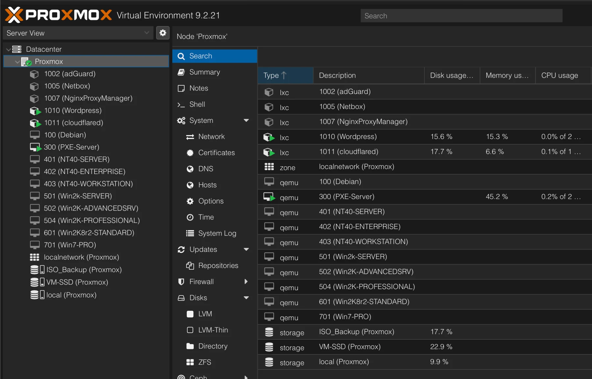

Objetivo
O Proxmox VE é utilizado como plataforma principal de laboratório para executar máquinas virtuais e containers Linux. Permite consolidar serviços, testar sistemas operativos e organizar armazenamento e backups no mesmo ambiente.

O que são máquinas virtuais (VM)?
Uma VM (Virtual Machine) é um computador criado por software dentro de um computador físico. Tem processador virtual, memória, disco e placa de rede virtuais; podes instalar-lhe um sistema operativo quase como se fosse outra máquina.
É isso que permite ter, no mesmo servidor Proxmox, máquinas de teste com Windows NT 4.0 e sistemas Linux, sem dedicar um computador físico a cada sistema.
Corre um sistema operativo completo com hardware virtualizado; geralmente consome mais recursos.
Ambiente Linux isolado que partilha o kernel do anfitrião; costuma ser mais leve.
Registo do estado de uma VM num momento, útil para recuar em testes; não substitui um backup.
Cópia de dados ou máquinas para recuperação após falhas, idealmente guardada noutro suporte.
Laboratório de sistemas históricos
Uma parte das experiências de virtualização passa por recuperar sistemas de outras gerações. No laboratório retro estão documentadas máquinas Windows NT 4.0 Server e Workstation, incluindo o trabalho com drivers e uma disquete virtual.
Porque utilizar máquinas virtuais para testar sistemas?
Num laboratório tradicional, experimentar um sistema operativo pode significar procurar um computador disponível, preparar um disco, instalar o sistema e descobrir controladores compatíveis com a placa de rede, a gráfica ou outros componentes. Com o Proxmox, boa parte desse trabalho passa a ser feito num ambiente virtual: cria-se uma máquina, escolhem-se os recursos e inicia-se a instalação a partir de uma imagem ISO, sem ser necessário alterar o sistema instalado no computador físico.
As VMs permitem experimentar diferentes versões de Windows e Linux, testar aplicações, serviços e configurações de rede, tudo no mesmo servidor. É possível, por exemplo, manter máquinas com Windows NT 4.0 e Windows 2000 para estudar sistemas antigos, ou criar uma VM Linux para testar um novo serviço antes de o colocar em utilização. Cada VM tem o seu próprio disco virtual, memória e configuração de rede, podendo ser ligada apenas quando faz falta.
Outra vantagem é a facilidade de recuperação. Antes de uma alteração arriscada, pode criar-se um snapshot para guardar um ponto de retorno, desde que a configuração e o armazenamento da VM o permitam. Se a experiência falhar, volta-se a esse estado; se a máquina deixar de interessar, pode ser eliminada e recriada. Isto torna os testes mais rápidos e evita reinstalar ou comprometer os sistemas de uso diário. Para preservar trabalho importante a longo prazo, os snapshots não substituem backups independentes.
Quanto aos drivers, a virtualização também ajuda: o sistema convidado utiliza dispositivos virtuais relativamente padronizados, em vez de depender diretamente de todos os componentes físicos do servidor. Nem sempre é tudo automático — sistemas antigos podem exigir uma placa de rede emulada mais compatível, controladores específicos ou configurações adicionais —, mas é geralmente muito mais simples do que procurar hardware antigo e respetivos drivers.
O isolamento também facilita experiências com endereçamento IP, servidores e comunicações entre máquinas. As VMs podem ser ligadas a redes de testes próprias, sem interferir na rede principal, desde que as bridges, VLANs e regras de firewall estejam corretamente configuradas. É uma forma prática de aprender, errar, corrigir e repetir experiências no mesmo equipamento.
Um exemplo do laboratório
Para testar uma configuração num Windows antigo, basta criar uma VM com o disco virtual pretendido, escolher uma placa de rede emulada compatível e instalar o sistema a partir da respetiva imagem ISO. Depois podem testar-se protocolos, comunicação entre máquinas e aplicações históricas. Quando o ensaio termina, a VM pode ficar guardada, ser restaurada ou eliminada, sem mexer no sistema principal do Proxmox.
O que está documentado
Tópicos principais
- Organização de VMs e containers LXC por função.
- Integração com bridges e VLANs do laboratório.
- Armazenamento para sistemas, imagens ISO e backups.
- Ambientes de teste com sistemas atuais e antigos.
- Procedimentos de recuperação e cópias de segurança.
Exemplos práticos
VM ou container: quando usar?
Uma VM virtualiza um sistema operativo completo e é adequada quando é necessário um kernel próprio ou maior isolamento. Um container LXC é normalmente mais leve e prático para serviços Linux compatíveis.
Estratégia de backups
As máquinas e serviços importantes devem ter cópias regulares para outro suporte de armazenamento, acompanhadas de testes periódicos de reposição para garantir que os ficheiros são válidos.